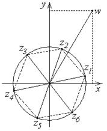

П 20.1 №13
Вычислите ; изобразите
схематично значения корня на комплексной плоскости.
Решение:
;
.
Начальный аргумент при  равен
.
равен
.
равен
.Значения корня:
,
 .
.Соответствующие 6 точек располагаются в вершинах правильного
шестиугольника на окружности радиусом .
Ответ:
